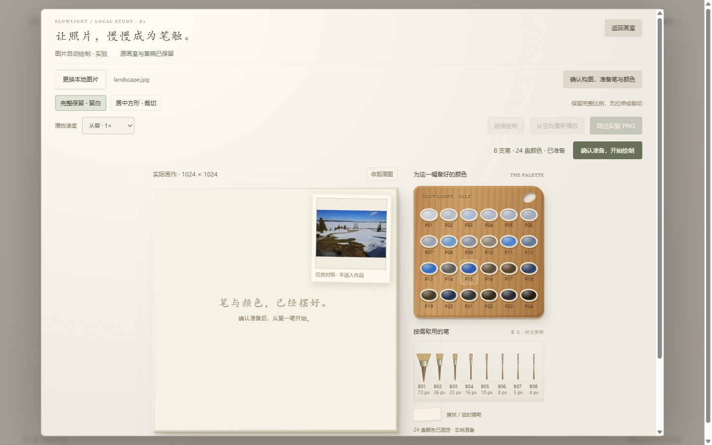
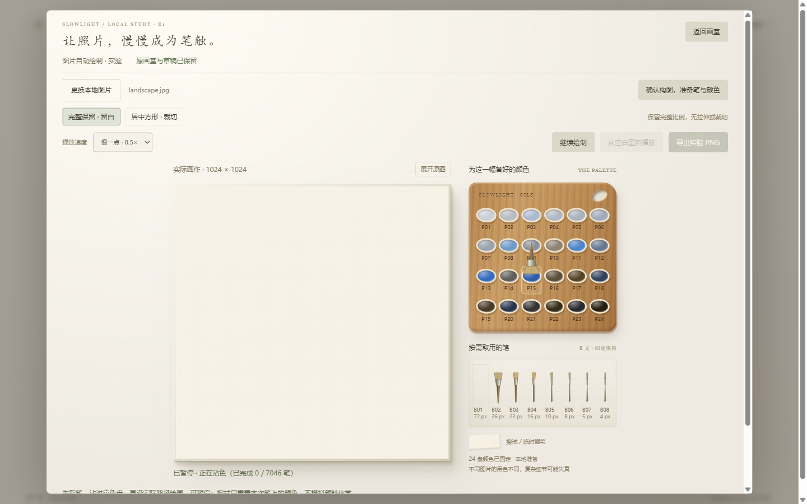

SLOWLIGHT / PREPARED STUDIO
先备好笔与颜色，再开始一幅画。
保留原主画室。独立图片实验采用左画布、右木质色盘和笔架；准备好的工具有固定身份，实际取用的颜色用于真实落笔。
准备、取笔与对应色盘


每张固定图准备 8 支实际规格笔、24 盘颜色。确认后才开始；取出时笔位留空，换色前擦拭，换笔和完成时归位。擦拭是载色状态清除，不是颜料化学或耗尽模拟。参考图、笔具和工具栏不进入 PNG。
展开：准备确认、慢速沾色、暂停和部分画作导出
黄石冬景


雪地、树群和前景仍可辨认。有限色盘改变了局部色调，细枝与栅栏不精确。
7046 笔 · 8 支笔 · 24 盘颜色 · 3832 次取色
规划 6.80 秒 · 4× 实际播放，录像含阶段暂停和导出 · 录屏期间批次 p95 3.60 ms
展开：从空白、取笔沾色到成品与归位的真实录像
咖啡与白瓷杯


杯口、杯碟和桌面保留主要关系。咖啡豆与细小纹理仍粗糙。
7305 笔 · 8 支笔 · 24 盘颜色 · 5193 次取色
规划 9.25 秒 · 4× 实际播放，录像含阶段暂停和导出 · 录屏期间批次 p95 4.60 ms

{kind=link}
{kind=link}
{kind=link}
{kind=link}
{kind=link}
{kind=link}
{kind=link}
{kind=link}
{kind=link}
{kind=link}
{kind=link}
展开：从空白、取笔沾色到成品与归位的真实录像
复杂夜景


保留街道和灯光的大体布局，文字、车辆与人物细节仍明显失真。精确还原未通过。
7240 笔 · 8 支笔 · 24 盘颜色 · 4485 次取色
规划 8.33 秒 · 4× 实际播放，录像含阶段暂停和导出 · 录屏期间批次 p95 5.80 ms
{kind=link}
{kind=link}
{kind=link}
{kind=link}
{kind=link}
展开：从空白、取笔沾色到成品与归位的真实录像
重播、降级与连续运行
三张完整计划分别在 0.5×、1×、4× 测试时钟下执行并校验颜色与高度；这是调度一致性测试，不是实时录像。下面的真实页面录像验证首阶段重播、1× 起笔后切换 4×、半笔暂停、导出、降级续画与原作品保留。完整实际三图录像见上方。长录像录于工具栏启动性能补正前，落笔计划和结果保持相同；本节与顶部是补正后的准备/操作录像。
展开：实际首阶段重播、半笔暂停与降级续画
独立复杂场景 4×，未录屏、截图或导出；实际耗时 7.00 分钟。批次 p95 3.00 ms，播放帧间隔 p95 12.40 ms。播放期记录 5 次超过 100 ms 的间隔，最大 1000 ms，原因尚未确认，不能称为零卡顿。帧间隔不是输入延迟，页面堆内存不代表 GPU、Worker 和原生缓冲总内存。